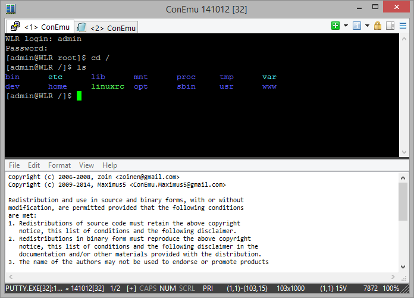
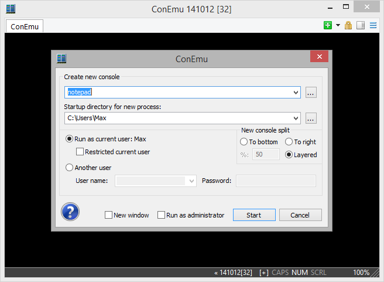

Running simple ChildGui is a "side-feature". ConEmu can't control or customize those apps. In most cases console versions are preferred because they are running in the ConEmu "native" mode.

ChildGui is a term defines GUI applications which are drawing their contents itself using WinApi. Few examples: PuTTY, mintty, notepad, GViM and so on. Don't confuse them with ConsoleApplication's which are specially compiled. ChildGui, even they have their own console-like interfaces are not ConsoleApplication's.
Note To be able to ‘integrate’ ChildGui into ConEmu, your application window must be resizeable! For example, if your PuTTY settings locks its window size to certain ‘rows x cols’ values, its window is non-resizeable, and ConEmu will not integrate it into ConEmu's tabs. Because it is not ‘possible’ to resize that ChildGui when ConEmu window is to be resizing!
One more note about hotkeys. When you are running ChildGui, all keypressed must be passed to that application. That's why most of ConEmu hotkeys will be inaccessible. With exception of hotkeys types ‘Global’, ‘Local’ and hotkeys with ‘Win’ modifier, if option ‘Install keyboard hooks’ is enabled.
At last. How to run ChildGui in ConEmu? Absolutely the same way you do that for simple ConsoleApplication's. For example, from ‘Create new console dialog’.
